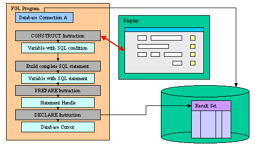

Summary:
See also: Flow Control, Dynamic SQL, Result Sets
Query By Example enables a user to query a database by specifying values (or ranges of values) for screen fields that correspond to the database. The runtime system converts the search filters entered by the user into a Boolean SQL condition that can be used in the WHERE clause of a prepared SELECT statement.
The CONSTRUCT instruction handles Query By Example input in the current open form and generates the SQL condition in a string variable. You can then use Dynamic SQL instructions to execute the SQL statement to produce a result set:

The following table lists all relational operators that can be used during a Query By Example input:
| Symbol | Meaning | Pattern |
| Any simple data type | ||
| = | Is Null | = |
| == | Equal to | == value |
| > | Greater than | > value |
| >= | Greater than or equal to | >= value |
| < | Less than | < value |
| <= | Less than or equal to | <= value |
| <> or != | Not equal to | != value, <> value |
| : or .. | Range | value1:value2, value1..value2 |
| | | List of values | value1 | value2 |
| Character data types only | ||
| * | Wildcard for any string | *x, x*, *x* |
| ? | Single-character wildcard | ?x, x?, ?x?, x?? |
| [c] | A set of characters | [a-z]*, [xy]? |
The CONSTRUCT instruction handles Query By Example input.
CONSTRUCT BY NAME variable ON column-list
[ ATTRIBUTES ( { display-attribute | control-attribute } [,...] ) ]
[ HELP
help-number ]
[ dialog-control-block
[...]
END CONSTRUCT ]
CONSTRUCT variable ON column-list FROM field-list
[ ATTRIBUTES ( { display-attribute | control-attribute } [,...] ) ]
[ HELP
help-number ]
[ dialog-control-block
[...]
END CONSTRUCT ]
where column-list defines a list of database columns as:
{ column-name
| table-name.*
| table-name.column-name
} [,...]
where field-list defines a list of fields with one or more of:
{ field-name
| table-name.*
| table-name.field-name
| screen-array[line].*
| screen-array[line].field-name
| screen-record.*
| screen-record.field-name
} [,...]
where dialog-control-block is one of:
{ BEFORE CONSTRUCT
| AFTER CONSTRUCT
| BEFORE FIELD field-spec [,...]
| AFTER FIELD field-spec [,...]
| ON IDLE idle-seconds
| ON ACTION action-name [INFIELD field-spec]
| ON KEY ( key-name [,...] )
}
dialog-statement
[...]
where dialog-statement is one of :
{ statement
| NEXT FIELD { NEXT | PREVIOUS | field-spec
}
| CONTINUE CONSTRUCT
| EXIT CONSTRUCT
}
where field-spec identifies a unique field with one of:
{ field-name
| table-name.field-name
| screen-array.field-name
|
screen-record.field-name
}
The following table shows the options supported by the CONSTRUCT statement:
| Attribute | Description |
| HELP help-number | Defines the help number when help is invoked by the user, where help-number is an integer literal or a program variable.
Warning: The HELP option overrides the HELP attribute! |
The following table shows the display-attributes supported by the CONSTRUCT statement. The display-attributes affect console-based applications only, they do not affect GUI-based applications.
| Attribute | Description |
| BLACK, BLUE, CYAN, GREEN, MAGENTA, RED, WHITE, YELLOW | The TTY color of the entered text. |
| BOLD, DIM, INVISIBLE, NORMAL | The TTY font attribute of the entered text. |
| REVERSE, BLINK, UNDERLINE | The TTY video attribute of the entered text. |
The following table shows the control-attributes supported by the CONSTRUCT statement:
| Attribute | Description |
| NAME = string | Identifies the dialog statement with a clear name. |
| HELP = help-number | Defines the help number when help is invoked by the user, where help-number is an integer literal or a program variable.
Warning: The HELP option overrides the HELP attribute! |
| FIELD ORDER FORM | Indicates that the tabbing order of fields is defined by the TABINDEX attribute of form fields. |
| ACCEPT = bool | Indicates if the default accept action should be added to the dialog. If not specified, the action is registered. |
| CANCEL = bool | Indicates if the default cancel action should be added to the dialog. If not specified, the action is registered. |
The CONSTRUCT statement produces an SQL condition corresponding to all search criteria that a user specifies in the fields. The instruction fills a character variable with that SQL condition, and you can use the content of this variable to create the WHERE clause of a SELECT statement.
To use the CONSTRUCT statement, you must do the following:
The CONSTRUCT statement activates the current form. This is the form most recently displayed or, if you are using more than one window, the form currently displayed in the current window. You can specify the current window by using the CURRENT WINDOW statement. When the CONSTRUCT statement completes execution, the form is cleared and deactivated.
Screen field tabbing order is defined by the order of the field names in the FROM clause; by default this is the list of column names in the ON clause when no FROM clause is specified.To complete the search functionality of your program, you must implement the following steps after the CONSTRUCT instruction:
If no criteria were entered, the string ' 1=1' is assigned to variable. This is a Boolean SQL
expression that always evaluates to TRUE so that all rows are returned.
After executing the CONSTRUCT instruction, the runtime system sets the INT_FLAG variable to TRUE if the input was canceled by the user.
When the CONSTRUCT statement completes execution, the form is cleared.
The ATTRIBUTES clause specifications override all default attributes and temporarily override any display attributes that the OPTIONS or the OPEN WINDOW statement specified for these fields. While the CONSTRUCT statement is executing, the runtime system ignores the INVISIBLE attribute.
The HELP clause specifies the number of a help message to display if the user invokes the help while the focus is in any field used by the instruction. The predefined help action is automatically created by the runtime system. You can bind action views to the help action.
By default, the tabbing order is defined by the column list in the instruction description. You can control the tabbing order by using the FIELD ORDER FORM attribute: When this attribute is used, the tabbing order is defined by the TABINDEX attribute of the form fields.
The ACCEPT attribute can be set to FALSE to avoid the automatic creation of the accept default action. This option can be used for example when you want to write a specific validation procedure, by using ACCEPT CONSTRUCT.
The CANCEL attribute can be set to FALSE to avoid the automatic creation of the cancel default action. This is useful for example when you only need a validation action (accept), or when you want to write a specific cancellation procedure, by using EXIT CONSTRUCT.
Note that if the CANCEL=FALSE option is set, no close action will be created, and you must write an ON ACTION close control block to create an explicit action.
When an CONSTRUCT instruction executes, the runtime system creates a set of default actions. See the control block execution order to understand what control blocks are executed when a specific action is fired.
The following table lists the default actions created for this dialog:
| Default action | Description |
| accept | Validates the CONSTRUCT dialog (validates field criteria) Creation can be avoided with ACCEPT attribute. |
| cancel | Cancels the CONSTRUCT dialog (no validation, INT_FLAG is set) Creation can be avoided with CANCEL attribute. |
| close | By default, cancels the CONSTRUCT dialog (no validation, INT_FLAG is set) Default action view is hidden. See Windows closed by the user. |
| help | Shows the help topic defined by the HELP clause. Only created when a HELP clause is defined. |
The accept and cancel default actions can be avoided with the ACCEPT and CANCEL dialog control attributes:
01CONSTRUCT BY NAME cond ON field1 ATTRIBUTES (CANCEL=FALSE)02...
Use a BEFORE CONSTRUCT block to execute instructions before the runtime system gives control to the user for search criteria input.
Use an AFTER CONSTRUCT block to execute instructions after the user has finished search criteria input.
A BEFORE FIELD block is executed each time the cursor enters into the specified field, when moving the focus from field to field. The BEFORE FIELD block is also executed when using NEXT FIELD.
Warning: When using the default FIELD ORDER CONSTRAINT mode, the dialog executes the BEFORE FIELD block of the field corresponding to the first variable of the CONSTRUCT, even if that field is not editable (NOENTRY, hidden or disabled). The block is executed when you enter the dialog. This behavior is supported for backward compatibility. The block is not executed when using the FIELD ORDER FORM.
Warning: With the FIELD ORDER FORM mode, for each dialog executing the first time with a specific form, the BEFORE FIELD block might be fired for the first field of the initial tabbing list defined by the form, even if that field was hidden or moved around in a table. The dialog then behaves as if a NEXT FIELD first-visible-column would have been done in the BEFORE FIELD of that field.
Use an AFTER FIELD field-name block to execute instructions when the user moves to another field.
The ON IDLE idle-seconds clause defines a set of instructions that must be executed after idle-seconds of inactivity. This can be used, for example, to quit the dialog after the user has not interacted with the program for a specified period of time. The parameter idle-seconds must be an integer literal or variable. If it evaluates to zero, the timeout is disabled.
You should not use the ON IDLE trigger with a short timeout period such as 1 or 2 seconds; The purpose of this trigger is to give the control back to the program after a relatively long period of inactivity (10, 30 or 60 seconds). This is typically the case when the end user leaves the workstation, or got a phone call. The program can then execute some code before the user gets the control back.
01...02ON IDLE 3003IF ask_question("Do you want to leave the dialog?") THEN04EXIT INPUT05END IF06...
You can use ON ACTION blocks to execute a sequence of instructions when the user raises a specific action. This is the preferred solution compared to ON KEY blocks, because ON ACTION blocks use abstract names to control user interaction.
01...02ON ACTION zoom03CALL zoom_customers() RETURNING st, cust_id, cust_name04...
You can add the INFIELD field-spec clause to the ON ACTION action-name statement to make the runtime system enable/disable the action automatically when the focus enters/leaves the specified field:
01ON ACTION zoom INFIELD customer_city02LET rec.customer_city = zoom_city()
For more details about ON ACTION and binding action views, see Interaction Model.
For backward compatibility, you can use ON KEY blocks to execute a sequence of instructions when the user presses a specific key. The following key names are accepted by the compiler:
| Key Name | Description |
| ACCEPT | The validation key. |
| INTERRUPT | The interruption key. |
| ESC or ESCAPE | The ESC key (not recommended, use ACCEPT instead). |
| TAB | The TAB key (not recommended). |
| Control-char | A control key where char can be any character except A, D, H, I, J, K, L, M, R, or X. |
| F1 through F255 | A function key. |
| DELETE | The key used to delete a new row in an array. |
| INSERT | The key used to insert a new row in an array. |
| HELP | The help key. |
| LEFT | The left arrow key. |
| RIGHT | The right arrow key. |
| DOWN | The down arrow key. |
| UP | The up arrow key. |
| PREVIOUS or PREVPAGE | The previous page key. |
| NEXT or NEXTPAGE | The next page key. |
An ON KEY block defines one to four different action objects that will be identified by the key name in lowercase (ON KEY(F5,F6) = creates Action f5 + Action f6). Each action object will get an acceleratorName assigned. In GUI mode, Action Defaults are applied for ON KEY actions by using the name of the key. You can define secondary accelerator keys, as well as default decoration attributes like button text and image, by using the key name as action identifier. Note that the action name is always in lowercase letters. See Action Defaults for more details.
Warning: Check carefully the ON KEY CONTROL-? statements because they may result in having duplicate accelerators for multiple actions due to the accelerators defined by Action Defaults. Additionally, ON KEY statements used with ESC, TAB, UP, DOWN, LEFT, RIGHT, HELP, NEXT, PREVIOUS, INSERT, CONTROL-M, CONTROL-X, CONTROL-V, CONTROL-C and CONTROL-A should be avoided for use in GUI programs, because it's very likely to clash with default accelerators defined in the Action Defaults.
By default, ON KEY actions are not decorated with a default button in the action frame (i.e. default action view). You can show the default button by configuring a text attribute with the Action Defaults.
The following table shows the order in which the runtime system executes the control blocks in the CONSTRUCT instruction, according to the user action:
| Context / User action | Control Block execution order |
| Entering the dialog |
|
| Moving from field A to field B |
|
| Validating the dialog |
|
| Canceling the dialog |
|
CONTINUE CONSTRUCT skips all subsequent statements in the current control block and gives the control back to the dialog. This instruction is useful when program control is nested within multiple conditional statements, and you want to return the control to the dialog. Note that if this instruction is called in a control block that is not AFTER CONSTRUCT, further control blocks might be executed according to the context. Actually, CONTINUE CONSTRUCT just instructs the dialog to continue as if the code in the control block was terminated (i.e. it's a kind of GOTO end_of_control_block). However, when executed in AFTER CONSTRUCT, the focus returns to the most recently occupied field in the current form, giving the user another chance to enter data in that field. In this case the BEFORE FIELD of the current field will be fired.
Note that you can also use the NEXT FIELD control instruction to give the focus to a specific field and force the dialog to continue. However, unlike CONTINUE CONSTRUCT, the NEXT FIELD instruction will also skip the further control blocks that are normally executed.
EXIT CONSTRUCT terminates the CONSTRUCT instruction without executing any other statement.
The ACCEPT CONSTRUCT instruction validates the CONSTRUCT instruction and exits the CONSTRUCT instruction if no error is raised. The AFTER FIELD and AFTER CONSTRUCT control blocks will be executed. Statements after the ACCEPT CONSTRUCT will not be executed.
The NEXT FIELD field-name instruction gives the focus to the specified field. You typically use this instruction to control field input dynamically, in BEFORE FIELD or AFTER FIELD blocks.
Abstract field identification is supported with the CURRENT, NEXT and PREVIOUS keywords. These keywords represent the current, next and previous fields respectively. When using FIELD ORDER FORM, the NEXT and PREVIOUS options follow the tabbing order defined by the form. Otherwise, they follow the order defined by the input binding list (with the FROM or BY NAME clause). Note that when selecting a non-editable field with NEXT FIELD NEXT, the runtime system will re-select the current field since it is the next editable field in the dialog. As a result the end user sees no change.
Non-editable fields are fields defined with the NOENTRY attribute, fields disabled with ui.Dialog.setFieldActive("field-name", FALSE), or fields using a widget that does not allow input, such as a LABEL. If a NEXT FIELD instruction selects a non-editable field, the next editable field gets the focus (defined by the FIELD ORDER mode used by the dialog). However, the BEFORE FIELD and AFTER FIELD blocks of non-editable fields are executed when a NEXT FIELD instruction selects such a field.
Inside the dialog instruction, the predefined keyword DIALOG represents the current dialog object. It can be used to execute methods provided in the dialog built-in class.
For example, you can enable or disable an action with the ui.Dialog.setActionActive() dialog method, or you can hide and show the default action view with ui.Dialog.setActionHidden():
01...02BEFORE CONSTRUCT03CALL DIALOG.setActionActive("refresh",FALSE)04AFTER FIELD field105CALL DIALOG.setActionHidden("refresh",1)
The ui.Dialog.setFieldActive() method can be used to enable or disable a field during the dialog. This instruction takes an integer expression as argument.
01...02ON CHANGE custid03CALL DIALOG.setFieldActive( "custaddr", FALSE )04...
The language provides several built-in functions and operators to use in an CONSTRUCT statement. You can access the field buffers and keystroke buffers with:
Form definition in the const.per file:
01DATABASE formonly0203LAYOUT04GRID05{06FirstName [f001 ]07LastName [f002 ]08e-Mail [f003 ]09}10END11END1213ATTRIBUTES14f001 = formonly.field1 TYPE CHAR;15f002 = formonly.field2 TYPE CHAR;16f003 = formonly.field3 TYPE CHAR;17END
Program:
01MAIN02DEFINE condition STRING03DATABASE stores04OPEN FORM f1 FROM "const"05DISPLAY FORM f106CONSTRUCT condition07ON first_name, last_name, mail08FROM field1, field2, field309DISPLAY condition10END MAIN
Form definition in the const.per file:
01DATABASE stores0203LAYOUT04GRID05{06FirstName [f001 ]07LastName [f002 ]08}09END10END1112TABLES13customer14END1516ATTRIBUTES17f001 = customer.first_name;18f002 = customer.last_name;19END
Program:
01MAIN0203DEFINE condition STRING04DEFINE statement STRING05DEFINE cust RECORD06first_name CHAR(30),07last_name CHAR(30)08END RECORD0910DATABASE stores1112OPEN FORM f1 FROM "const"13DISPLAY FORM f11415CONSTRUCT BY NAME condition ON first_name, last_name16BEFORE CONSTRUCT17DISPLAY "A*" TO first_name18DISPLAY "B*" TO last_name19END CONSTRUCT2021LET statement =22"SELECT first_name, last_name FROM customer WHERE " || condition23DISPLAY "SQL : " || statement2425PREPARE s1 FROM statement26DECLARE c1 CURSOR FOR s127FOREACH c1 INTO cust.*28DISPLAY cust.*29END FOREACH3031END MAIN